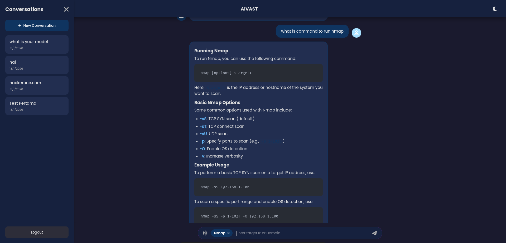
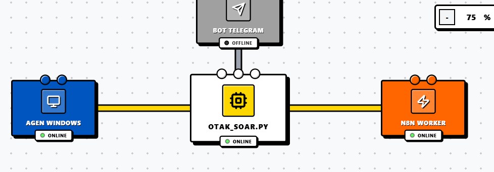

AIVAST is a security scanning tool that integrates traditional security tools like nmap and nikto with the power of LLMs (Groq) for automated results analysis.

Block SOAR is a Security Orchestration, Automation, and Response (SOAR) platform that helps organizations automate their security operations and incident response processes.